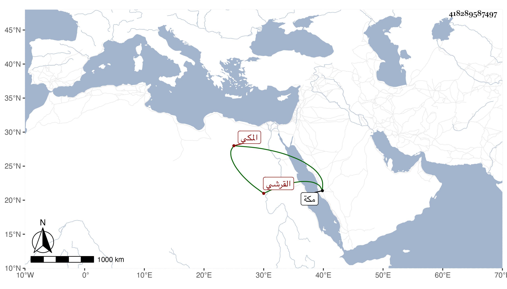

0902Sakhawi.DawLamic.ITO20230111-ara1.EIS1600.418289587497
Biography ID: 418289587497
297
عبد المحسن بن أحمد بن أبي بكر عبد الله بن ظهيرة بن أحمد بن عطية بن ظهيرة القرشي المكي ابن عم الكريمي عبد الكريم بن عبد الرحمن بن أبي بكر الماضي وأبو زوجه الجمال محمد بن الشيخ إسماعيل وأمه زينب ابنة المحب بن ظهيرة . ولد سنة أربعين وثمانمائة بمكة ونشأ بها فحفظ القرآن والمنهاج وحضر الدروس وسمع أبا الفتح المراغي والزين الأميوطي وآخرين . مات بعد تعلله مدة في سابع شوال سنة ثمان وتسعين وصلي عليه عقب الصبح من الغد ثم دفن بالمعلاة .
